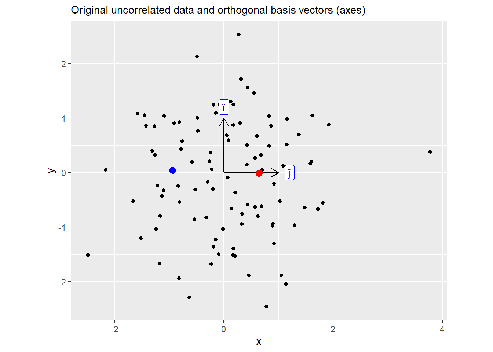
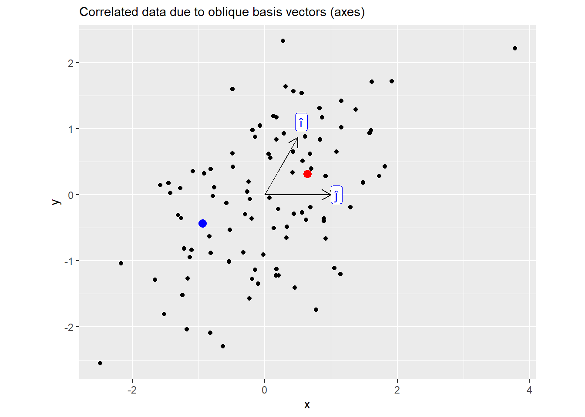
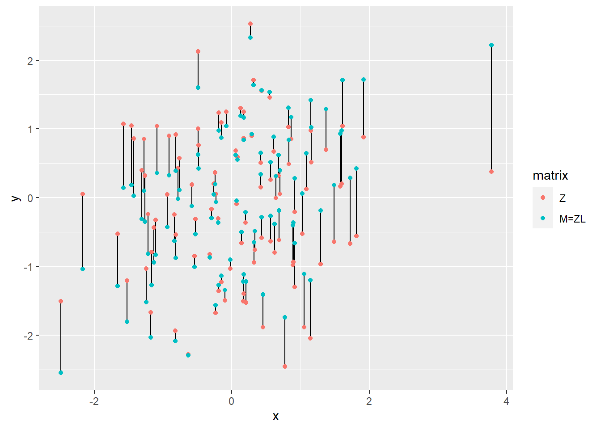

19 Intuition for how Cholesky decomposition makes possible to generate correlated random variables
In chapter 14 of the “Statistical Rethinking”, a Cholesky decomposition of a partial correlations matrix is used to generate correlated random variables with matching partial correlations. For uninitiated the whole procedure looks magic but “It would be magic, except that it is just algebra.” The purpose of these notes is to provide an intuition of how this works. I will present two explanations: A purely algebraic one and a more visual one. Unfortunately, both of them require knowledge of essentials of linear algebra. I would recommend the entire Essense of linear algebra series by Grant Sanderson, a.k.a. 3Blue1Brown but first three videos are a must at least for the visual proof. These are bite-sized 10-15 minute videos that deep you a deep intuition about a single topic, so you can always watch them when you have a break.
19.1 A verbose and visual proof
For me the critical part was to understand what exactly does the Cholesky decomposition perform, i.e., what information the matrix \(L\) holds and what kind of linear transformation it represents. First, let us think what a correlations matrix is: \[\Sigma = \begin{vmatrix} corr(x, x) & corr(x, y) \\ corr (y, x) & corr(y, y) \end{vmatrix} \]
Now we need to recall some linear algebra, namely that a dot product between to vectors is \(x \cdot y = |x| |y| cos(\theta_{xy})\), where \(|x|\) and \(|y|\) are length of vectors \(x\) and \(y\), and \(\theta_{xy}\) is an angle between them. Also note that \(cos(\theta)\) corresponds to Pearson’s correlation \(\rho\). If \(x\) and \(v\) are z-scores with mean of zero and standard deviation of one then their length is \(1\) then their dot product computes Pearson’s correlation directly: \[x \cdot y = |x| |y| cos(\theta_{xy}) = 1 \times 1 \times cos(\theta_{xy}) = cos(\theta_{xy})\]
This means that we can rewrite our correlation matrix as a matrix of cosines of angles between individual vectors (variables): \[\Sigma = \begin{vmatrix} cos(\theta_{xx}) & cos(\theta_{xy})) \\ cos(\theta_{yx}) & cos(\theta_{yy})) \end{vmatrix} \]
Now it is time to get to Cholesky decomposition: \(\Sigma = L L^T\). Given that \(\Sigma\) is a matrix of pairwise (cosines of) angles between vectors, Cholesky decomposition produces a set of vectors with exactly those angles in-between.
Let us visualize this for a 2D case. A correlation of \(0.5\) corresponds to a \(cos(60 ^{\circ})\)
## [,1] [,2]
## [1,] 1 0.5000000
## [2,] 0 0.8660254Now for a negative correlation
## [,1] [,2]
## [1,] 1 -0.5000000
## [2,] 0 0.8660254The same logic applies to cases beyond 2D but are trickier to visualize.
Now that we know what matrix \(L\) represents (set of vectors that are positioned at desired angles relative to each other), we can think about what \(LZ\) achieves given that \(Z\) is our \(N\times 2\) matrix random numbers. Recall that a (square) matrix describes a linear transformation of space and can be understood by where it sends basis vectors (axes) \(\hat{i}\) and \(\hat{j}\) (watch this video to get a visual feel for it). Our matrix \(L\) sends \(\hat{i}\) to a new location described by its first column41 and \(\hat{j}\) to a location defined by its second column. This rotates and sheers the space. When applied to our random vectors, this means that although they started as independent (lying along orthogonal axes) they become correlated (as the axes they lie along stop being orthogonal).
Again let us visualize for the case of \(\rho=0.5\), i.e., \(\theta_{xy} = 60 ^\circ\):
## [,1] [,2]
## [1,] 1 0.5000000
## [2,] 0 0.8660254## [,1] [,2]
## [1,] 1.00000000 0.01781367
## [2,] 0.01781367 1.00000000Below is the plot of the original data. Note two highlighted points, here, values of x (positive for a red dot, negative for a blue one) are uncorrelated with values of y (roughly zero, which is why I have picked these two points).  Now the same plot but for \(M = ZL\). Here, knowing \(x\) coordinate allows you to predict \(y\) as well. 
Below is the plot for all points, showing their positions before and after the transformation. Note how the dots are only moved along the vertical axes. This is because Cholesky decomposition left the first basis vector \(\hat{i}\) (x-axis) unchanged (still \((1, 0)\)) but adjusted the \(\hat{j}\) to achieve the desired angle of \(60^\circ\). Also note that we could have used a different vector for \(\hat{i}\), after all there are infinite pairs of \(\hat{i}\) and \(\hat{j}\) with \(60^\circ\) between them. However, Cholesky decomposition needs a starting point — a first vector — and keeping \(\hat{i}\) at its original position is as good of a starting point as any. 
19.2 Purely algebraic proof
Here is an alternative purely algebraic take on it. Note that this is a very brief description, for further details please refer to an excellent post by Matteo Lisi.
Given that we have a correlations matrix \(\Sigma\), we can use Cholesky decomposition: \[\Sigma = LL^T\] Next, we can generate a matrix of uncorrelated random numbers \(Z\) (e.g., z-scores from a standard normal distribution). Assuming that samples are uncorrelated then the covariance matrix is \(\mathbb{E}(ZZ^T) = I\) (an identity matrix with \(1\) on the diagonal and \(0\) everywhere else). For the proof you need to remember that:
- order of factor is reversed if you apply transposition or inverse to the individual factors of a matrix product \((AB)^T = B^TA^T\),
- \(\mathbb{E}(cX) = c\mathbb{E}(X)\) an expected value of a scaled quantity is equal to an expected value of the unscaled quantity times the scaling factor (e.g., \(mean(3\cdot x) = 3\cdot mean(x)\))
- matrix multiplication by an identity matrix does not change anything \(IM=M\) (this is just like multiplying a scalar by \(1\): \(1\cdot m = m\)),
Now, given that \(M=LZ\) (we matrix multiply our uncorrelated data with the Cholesky factor of the desired pairwise correlations matrix), we can compute partial correlations for these new values \[\mathbb{E}(MM^T) = \\ \mathbb{E}((LZ)(LZ)^T) =\] Applying rule #1 to open the brackets: \[\mathbb{E}(L Z Z^T L^T) =\] Applying rule #2 to move constant \(L\) out of expected value operator: \[L\mathbb{E}(Z Z^T) L^T =\] Remembering that \(\mathbb{E}(ZZ^T) = I\) \[L I L^T =\] Applying rule #3 to multiply by an identity matrix \[L L^T = \Sigma\]
The proof is very simple and you see that you must end up with a roughly the same42 correlations. Unfortunately, although I can see why this should work (because algebra), I do not get any intuition about how it works, which is I came up with a slower visual explanation above.